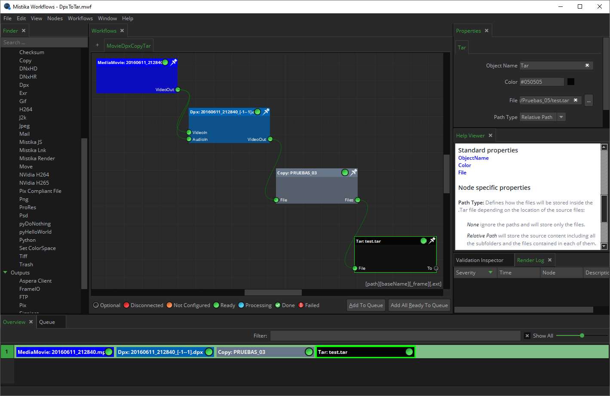
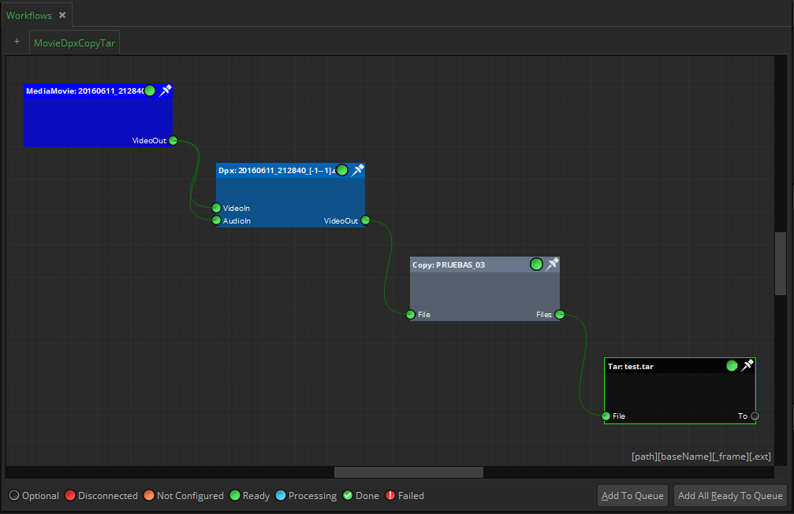
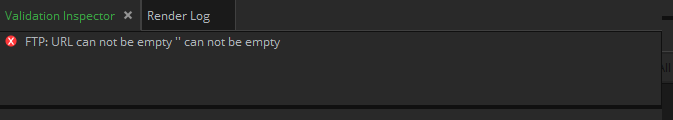
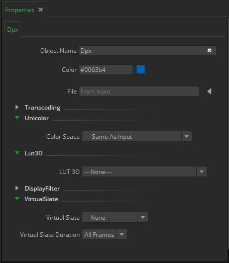
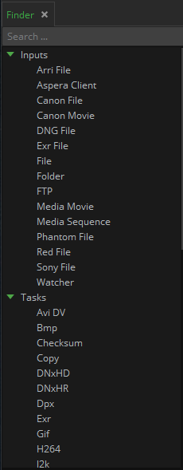
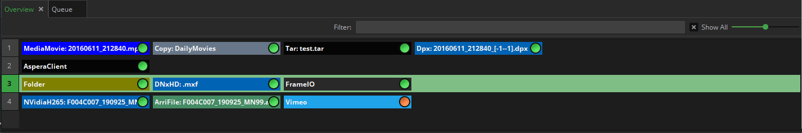
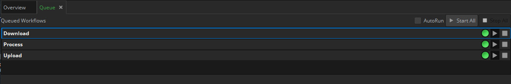
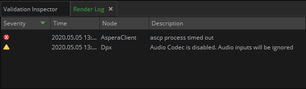
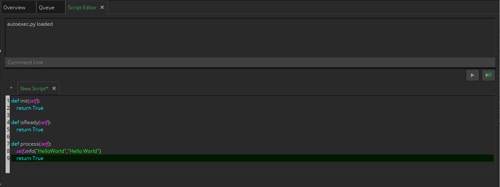

Every time you open Mistika Workflows an unnamed project is created with an empty Nodegraph. The user may start with that new project or open the saved project by clicking on File > Open.
The Mistika Workflows interface is composed of dockable panels following "Qt" standards. ( you can change its positions by dragging their labels, resize panels pulling intermediate edges, convert panels into floating windows, make them to appear and disappear, etc)
The interface panels are (according to their default positions):
NODEGRAPH - It is the main central area where new workflows can be composed. It allows a simple drag-and-drop of files from external browsers to create the corresponding input nodes.
In the upper part of the Nodegraph section, a symbol “+” is placed, allowing the creation of another workflow Nodegraph. A new workflow will appear as another tab, seen in the upper part of this section.

If you need more space, you can use the mouse wheel to zoom in / out (or the associated hotkeys Ctrl+ / Ctrl - ).
Once the workflow is ready, the circle icons on the nodes will turn green and the button “Add to queue” in the right bottom part of the panel will be enabled.
But if there is an error in the composed workflow, a missing property value, or a missing connection those circles will become red or orange, and the Add to queue button will be disabled. An explanation about the problem with the selected node can always be found in the Validation inspector panel, in the right bottom part of the Interface.
VALIDATION INSPECTOR - Informs about the status of the selected node. If the node is not ready for execution (orange color) it will tell you what properties have wrong values or whatever is missing before it can do its job.

PROPERTIES - In the upper right corner of the interface. All the properties of the selected node are displayed in this panel. For example, in the case of having a media file it will show the resolution, aspect ratio, FPS, etc. Some properties can be changed while others are only informative.

FINDER - The nodes finder enables easy navigation among all existing nodes. It offers the ability to filter by simply typing in the name of the desired node directly into the search bar. You can also access all nodes using the contextual menu (right mouse button) on the Nodegraph.

However, as there are many nodes the easy way to find a particular node is to type any part of its name in the Search field.
OVERVIEW - The section in the bottom part of the interface offers an overview of all the active workflows. It is a fundamental tool when you have many of them.

This panel also allows filtering, to see only the desired workflows.
On the right side of this window, you can choose the zoom level with the slider.
This panel provides an alternative view to the Nodegraph, which can only show a workflow at a time. As a difference, the Overview panel provides a more general view about the current state of all the nodes in all workflows. This is probable the most important panel for workflow supervisors (alongside the Queue panel), as it can show the global state of hundreds of workflows at the same time: Combined with the Validation inspector it will tell you which workflows are ready or not ready to use and why, which ones are ready to be sent to the queue panel to start the processing, or where are the running workflows stopped and why.
You can selectively select workflow lines (Shift+Click and Ctrl+Click are supported), and the Nodegraph will switch to it.
You can also use it to directly select one node of any workflow, to see its properties and status messages.
QUEUE - The section in the bottom part of the interface shows the list of active workflows. Once a workflow is ready in the Nodegraph then you can add it to the queue panel, and then use the StartAll menu at the right to start executing all the workflows, or StopAll to stop all of them.

Start and stop buttons (square and play icons) are also provided at the right of each workflow line, so you can start or stop any of them on demand, without affecting the others..
The workflows are executed in the same order that they appear, but their order can be changed by doing drag & drop between them.
A contextual menu provides options to manage the queue content (to reorder workflows, delete selected, clear completed, etc)
The Autorun button will force to execute the workflow as soon as you place it in the Queue panel (without waiting for manual execution), which is useful for fast tests and rapid interaction. If it is not active the workflows in the queue will not start until starting them manually. This button is specially useful to control the behavior of complex situations, for example when you have made a workflow capable to create other workflows and add them to the queue.
The Queue has a "progress bar" for each workflow. In addition, Mistika Workflows provides a more granular information by using circular progress indicators on each node, which will let you know which node is currently processing and its state of completion. A check mark icon will also appear once it is finished.
RENDER LOG - Central section on the right part of the interface shows the status of the workflows execution and possible render errors.

The same messages are also sent to a render log file (one .log file per day), which will appear in this folder: SGO AppData/Workflows/log/
COLORS INTERPRETATION
- Orange: An obligatory connector of a node is not yet connected. The node light will also indicate it
- Red: Something is not right, actions need to be taken before the workflow can be performed. The exact reason for the error can be found in the Inspector Panel .
- Green: The workflow is ready to be executed.
- Blue: The workflow is being processed.
- Green with a check mark: The workflow has been already executed.
- Red with "!": A workflow execution finished with error. Check the Render Log panel for the error cause.

SCRIPT EDITOR - Contains several Python scripting tools. This panel is hidden by default as it is only meant for users with at least some Python programming skills (and in fact it can be a good tool to learn Python). To open it go to the main menu options, and click on Window > Panels > Script Editor.

For a more detailed introduction please go the Python scripting tools chapter